Interactions Forms
Interactions Forms
Interactions Forms
Interactions Forms
Interactions in Specify allow users to create and manage documentation associated with the movement of specimens or data into or outside of the collection. This includes information about loans, gifts, borrowed items, permits, shipments, accessions, disposals, deaccessions and information requests. For example, a collection manager may respond to a request for a loan of specimens for research by creating loan record in Specify. The record would include the list of specimens to be loaned, along with other required loan information (loan number, date of loan, due date, agents, etc.). When the loan is returned, the manager would then update the loan record to note the date of the return and which specimens were returned.
Access Interaction Forms by clicking the  Interactions button. A list of forms will appear in the side bar.
Interactions button. A list of forms will appear in the side bar.
Note: If an Interactions button is not available on the task bar choose Specify > Preferences >
Task Bar, then click the Interactions checkbox.
Specify 6 ships with the most frequently used forms listed on the side bar.
A Side Bar Interaction Form Configuration allows the available Interaction forms listed on the side bar to be rearranged and hidden:
Choose Tabs > Configure Side Bar in the main menu.
- Use the
, and
(reorder) buttons to change the order in which the forms appear in the side bar and More Forms list.
- Use the
, and
(move) buttons to show or hide an available side bar item.
Interactions forms can be activated by clicking them in the side bar. Accessions, Disposals, Gifts, Loans, Exchange Outs or Information Requests can also be activated by dropping a Collecion Object record set onto them in the side bar.
Note: The Side Bar Configuration tool can also be opened by right-button-clicking in the right side of the side bar to open the Form Configuration tool, then click on the
button.
Accessioning is the formal process by which a specimen or object is legally accepted and recorded as a museum item and differs from cataloging. This usually entails proof of ownership (in the form of a signed deed of gift) and legal collection (in the form of all associated permits - collecting, import and export). Accessioning and its numbering system are usually a policy adopted as a museum-wide policy but is not used by all museums. An accession usually covers an entire field trip and multiple catalog items could be included within a single accession. Within the database there is a one-to-many relationship between Accessions and Collection Objects. Accessions can be created through the Interactions menu or directly from the Collection Object being entered.
Note: Accession number is one of the fields that can be formatted through the schema localizer. The accession numbering system can also be associated at the Collection level for individual collection use or the Institution level where a single numbering system is adopted by all collections within an Institution.
All associated agents and permitting information can be entered in a one-to-many relationship within the accession.A Deaccession, the legal process of removing items from a collection, can be associated with the relevant accession(s).
Loans, Gifts, Exchange Outs and Disposals document items leaving the Institution, and Collection Objects are linked to them through preparations. The first step in creating a record is choosing the specimens (as preparations) to add to the transaction.
A Specify preference allows collections to choose whether to use collection object identifiers (example: Catalog Number) or preparation identifiers (example: Preparation Number, Bar Code), or to be asked. For more information see Interactions Preferences.
- Click the desired transaction in the side bar to start the process.
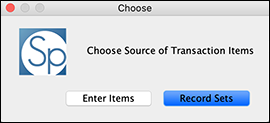
A dialog will appear to select how you wish to choose specimens/items to include in the transaction.
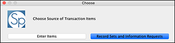
If any record sets or Information Requests have been saved, a dialog appears prompting the user to either Enter Items or use an existing Record Set or Information Request. The Record Set option is the easiest method to use when loaning/gifting large numbers of Collection Objects or Preparations. The Information Request is a good way to document the data sent outside of the collection.
Uncataloged items may also be recorded in Interactions (See Loaning Uncataloged and Cataloged Items)
Choose Enter Items
Note: If the Interactions Preference is set to 'Ask' as the Default Source Table in the Interactions Preference a dialog listing the Item Source will be presented. Choose either the Collection Object or Preparation from the list.
- Enter (Item Source) List by typing the identifying numbers into the text dialog, separating multiple numbers with commas (100, 105, 152))
- Enter a consecutive range of numbers, with a slash as a separator for the range, for example: 12012-12020
OR, if the number includes a dash a slash can be used, for example: 2011-0001/2011-0010
or Choose Record Sets or Information Requests (when available)
A dialog will then appear listing the appropriate Records Sets. If only one record set exists, it will be used by default. This can also be accomplished by dragging and dropping the record set onto the Loan button on the sidebar.
Note: If a non-loanable Preparation Type is selected a warning dialog will appear informing the user that the chosen specimen(s) are not loanable.
Next, a dialog listing all preparations associated with the choice above (collection object or preparation) will appear.

Create Loan from Preparations
Each checkbox represents either a Collection Object or Preparation (depending on the preference selected above) and is labeled with the appropriate identifier and determination. Specimen counts reflect the number of specimens that are currently available to be loaned. An indication is also given if any additional specimens are associated with previous open loans or gifts. In these cases the total number of available specimens would be reduced by this number. The
(information) button links to information about the unavailable preparation.
- Select specimens by typing the number of specimens of each preparation being sent on loan into the dialog or use the up and down arrow keys. If multiple preparations for a single Collection Object are present, they will be listed together under the same checkbox. All preparations can be selected at once by clicking the Select All button at the bottom of the dialog.
Click the OK button to accept the preparations and progress to the Loan/Gift form where all additional information pertaining to the Loan or Gift can be added.
Loaning Uncataloged and Cataloged Items
To document both cataloged and uncataloged items and track the counts first choose the transaction from the Side Bar.
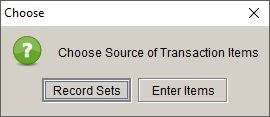
Choose Source for Loan
If you have appropriate Record Sets available to choose from you will immediately see the Choose Source dialog above. Choose Enter Items from the Choose Source dialog.
Note: If you do not have appropriate Record Sets (Collection Object or Preparation) you will only see the Enter List dialog below.
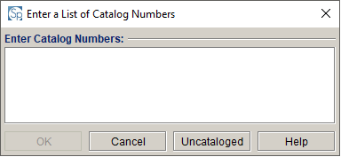
Create Loan from Preparations
Next, choose the Uncataloged button at the bottom of the dialog box.
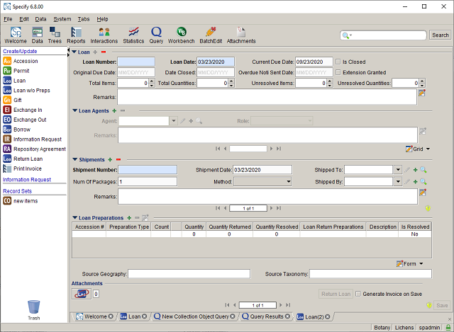
Loan with Uncataloged Item
An Interaction form with a single Preparation with '0' quantity is presented. Double click the Preparation row to change the information associated with it.
Click the
(add) button to add additional Cataloged or Uncataloged items.
Calculated fields for Total Items, Total Quantities, Unresolved Items and Unresolved Quantities are included on the default Interaction form. These allow total counts to be captured but are not associated with uncataloged items.
Once the interaction has been successfully completed, a Generate Invoice on Save check box becomes available on the form. If checked and the necessary query and Report have been constructed, the Report associated with the Interaction will be created automatically once the Save button has been clicked.
A sample invoice for each Discipline is included with Specify and will print automatically if a custom invoice has not been created. When creating a custom invoice in SPiReport save the report/invoice as an 'invoice'. Once an invoice has been saved checking the Generate Invoice on Save check box will display your invoice in a list and allow you to print it.
Loans are unique in that the items are expected to be returned; therefore extra fields can be added to the Loan form for tracking the status of the loaned items and Due Dates.
Note: A Due Date can be set automatically in the Interactions Preference.
To return items associated with a loan open the loan by searching for it with the appropriate field (for example Loan Number) into the Simple Search bar or querying for it. Once the Loan is open click the Edit button. A Return Loan button appears on the bottom of the Loan form.
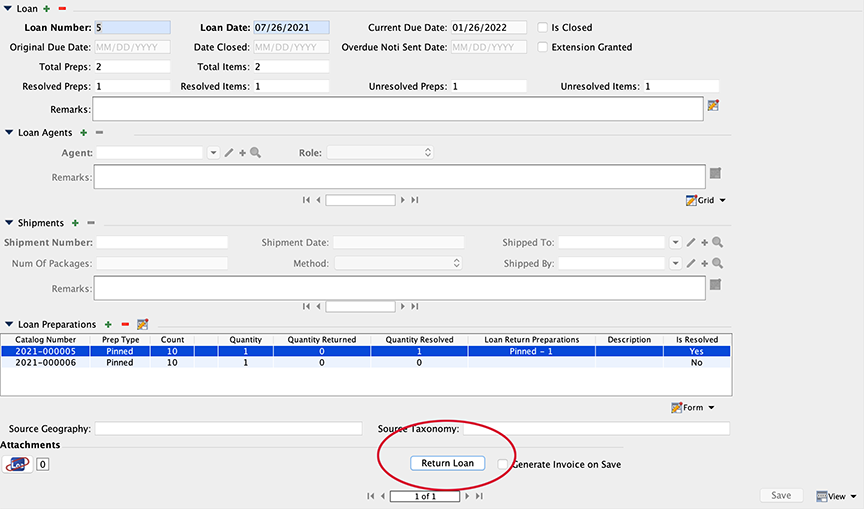
Return Loan Button
- Click the Return Loan button
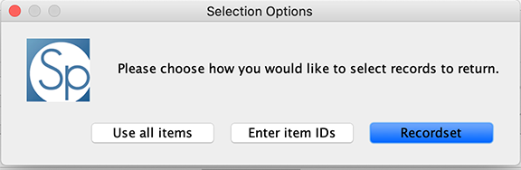
Return Loan Selection Options
Next, select the appropriate option for returning the loaned item(s)
- Use all Items presents a dialog listing all loaned items based on the unique identifier selected in the Interactions Preference.
- Enter Item IDs allows you to enter specific identifiers for the loaned items either by typing them or by using a bar code reader. Identifiers are entered based on the unique identifier selected in the Interactions Preference.
- Record Sets will present a dialog listing all items in a Record Set. If any of the items in the Record Set are not included in the Loan you will be presented with a warning.
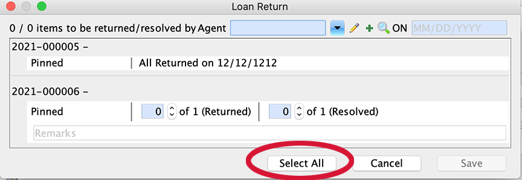
Select All Button
When returning all of the items in a loan it is easiest to use the Select All button at the bottom of the Loan Retun dialog. Clicking Select All will return and resolve the loan and close the loan by checking the Is Closed checkbox in the loan, thereby closing the loan. The Return Loan button ont the form will also change to All Returned. If any of these numbers are altered at any stage, thereby reopening the loan, this button will revert to Return Loan. For partial returns, or when some items are resolved but not returned, due to loss or damage, the quantity returned and quantity resolved can be manipulated and remarks inserted.
When returning loans, a Loan Return Prep record is created for each preparation lent out. There are three values associated with each Loan Return preparation:
Quantity - the quantity of each preparation lent out.
Quantity Returned - the quantity of preparations returned. This may not equal the quantity sent out in cases of partial returns and/or lost/damaged specimens not returned (see resolved below).
Quantity Resolved - used to document items that are resolved but have not been returned. This is used in the case where specimens are lost or damaged and are no longer associated with the collection. It us often helpful to use the remarks field to describe the circumstances of this discrepancy.
For the loan to be closed, the quantity lent must equal the quantity resolved. In the case of a full return of a loan, all three numbers would be identical for each preparation.
Loan Return Prep's can also be individually altered using the Loan Return Prep button
on the Loan Preparation form.
Note: The quantity, quantity returned, and quantity resolved cannot be manually edited on the Loan Preparation form.
Note: The Is Closed check box is editable only when the quantity returned and quantity resolved do not equal each other i.e. when the loan is NOT closed.
Fields for tracking loan counts, especially for partial returns, are available on the Loan form. The default Loan form includes fields to track total counts near the top of the form:
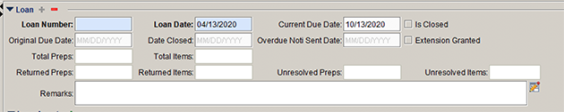
Loan Counts on Loan Form
Total Preps - the count of Preparation Types, for all Catalog Numbers, included in the loan.
Total Items - the total count of individual items included in the loan.
Returned Preps - the count of Preparation Types, or all Catalog Numbers, returned.
Returned Items - the count of individual items returned.
Unresolved Preps - the count of Preparation Types, for all Catalog Numbers, not resolved.
Unresolved Items - the count of individual items not resolved.
Detailed information is included in the Loan Preparation sub form located near the bottom of the default Loan form:
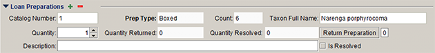
Preparation Counts on Loan Form
Collection managers are regularly asked to share specific data records with local or external researchers. In most cases this is accomplished by attaching a spreadsheet or .csv file to an email message. The information shared is usually in the form of Collection Objects. Specify 6 has an automated function to handle responses to specimen information requests and record these for later retrieval and reporting.
Interactions such as Loans, Gifts, Exchange Outs and Disposals can also be created using Information Requests.
Click Information Request in the side bar to start the process.
If any record sets have been saved, a dialog appears prompting the user to either Enter Catalog Numbers or use an existing record set. The Record Set method would be easiest when using large sets of data.
The Collection Objects will be added to the Information Request form. Once they are added, the Send Email on Save check box becomes available on the form. If checked and a) the recipient has an email address associated with their agent name in the database and b) the necessary email settings have been entered in Preferences > Email, an email will automatically be sent to the designated recipient once the Save button has been clicked. The attached Collection Objects will appear in the main portion of the email and will also be attached as a CSV file.
Unlike queries, Information Requests are only saved on the side bar and not in the database and are not searchable. Saved Information Requests listed on the side bar can be deleted by dragging and dropping them onto the trash can. No record will be kept in the database of an Information Request once it has been deleted.
It is possible to send an Information Request via email at a later date or resend it if it has been saved.
Specimens may be transferred outside of the collection and not expected to be returned. In these instances they may be considered a Gift. Gifts can be documented by creating a record using the methods described above.
The Exchange In / Exchange Out feature of Specify 6 is intended to give certain disciplines the facility to track incoming and outgoing specimens related to each other.
The Exchange Out table is connected to preparations for the exchanging of cataloged items. Functionality follows that of Gifts and Loans above. Forms can also be modified or augmented to incorporate the exchanging of non-cataloged items much like in Loans without Preps.
The Exchange In table is similar to the borrow table in recording incoming material and thus does not use preparations.
There may be times when specimens are no longer available in a collection for reasons other than a transfer of ownership (such as a Gift or Exchange Out transaction). This may be a destructive sample, item lost in transport, the item was disposed, or simply no longer found in the collection. For this purpose Specify created the Disposal table. Disposals canDeaccessions be created using the steps outlined above.
Deaccessions in Specify are the opposite of an Accession i.e. the legal process of relinquishing possession of a specimen through removal from the collection. For this reason Deaccessions can not be created without a specimen first being associated with the relevant transaction - Gift, Exchange Out or Disposal. Deaccessions can be queried and viewed, but the creation of a Deaccession can only be accomplished from a Gift, Exchange Out or Disposal form as shown below.

Create a Deaccession from the Disposal Form
Click the

Documenting a Deaccession
Information such as Total Preps and Total Items will automatically update once the Deaccession is saved. As shown on the form above, Deaccessions are related to Accessions and Accession information can be viewed from the Deaccession form and vice versa.
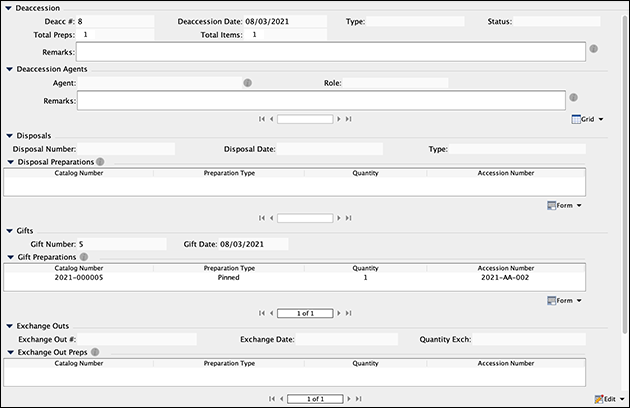
Deaccession Form
Once created, Deaccessions information can be viewed by first searching for the Deaccession and then opening it in a form.
Fields for summing the number of Preparations and number of Items associated with the Preparation can be added to the Disposal, Gift, and Exchange Out forms. These fields are included in the Specify 6.8.01 default forms. Information for adding them to forms prior to this release can be attained by emailing support@specifysoftware.org

Specimens that are on loan from another collection can be tracked in Specify by creating a Borrow. Borrows never become part of your collection and therefore the forms and data will not be entered into any Collection Object fields or related fields. Borrows must be given an Invoice Number.
A repository agreement is similar to an accession but does not transfer ownership of the specimens. This is most frequently entered into with countries that do not wish to lose claim to their biodiversity but will allow museums to house their specimens and, in some cases, is the only method of legally collecting in some countries. Repository agreements can entail multiple accessions i.e. multiple field trips, and thus there is a one-to-many relationship in the database between repository agreements and accessions and a method for linking many accessions to a single repository agreement.
Much like an accession, all associated agents and permitting information can be entered in a one-to-many relationship within the repository agreement.